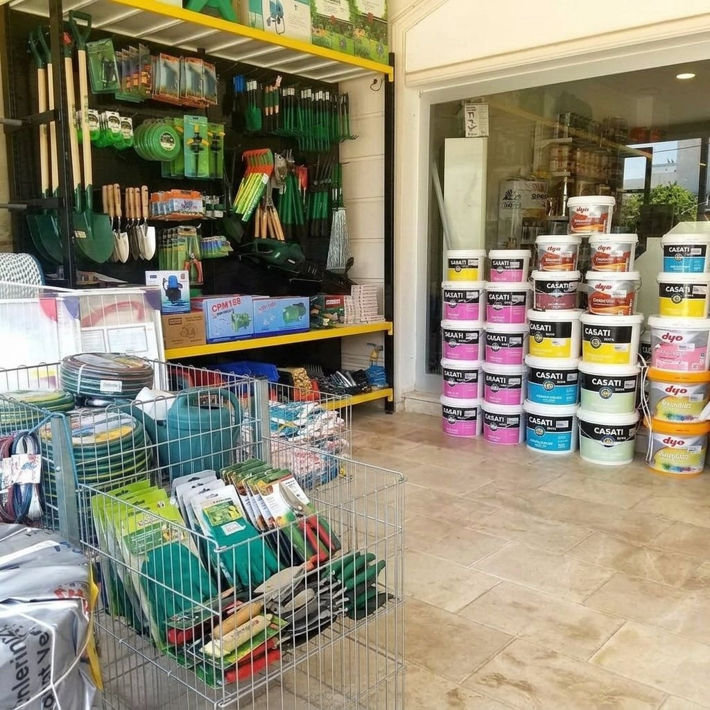

Gümbet Şubesi · Bodrum
Gümbet'te
yapı market
Bodrum merkeze yakın Gümbet şubemizde çimento, gazbeton, inşaat demiri, izolasyon ve mantolama, iç ve dış cephe boyası, seramik ve vitrifiye, tesisat, hırdavat ve elektrikli aletler. Ustaya da ev sahibine de toptan ve perakende satış.
Saat kontrol ediliyor
- Bodrummerkeze yakın
- Toptanve perakende
- Teslimatşantiyeye

her şey
Gümbet şubesinde neler var?
Kaba malzemeden
ince malzemeye.
Stok ve fiyat için şubemizi arayın ya da ihtiyaç listenizi WhatsApp'tan gönderin.
-
01
Kaba malzeme
Çimento · tuğla · gazbetonKum, çimento, tuğla, gazbeton, alçı, yapıştırıcı ve harçlar.
-
02
İnşaat demiri
Demir · hasır · profilNervürlü demir, çelik hasır, kutu ve galvaniz profil; Ortakent'ten sevk.
-
03
İzolasyon & mantolama
Isı · su yalıtımıMantolama levhaları, su yalıtım ürünleri ve yapı kimyasalları.
-
04
Boya
İç · dış cepheİç ve dış cephe boyaları, astarlar, vernik ve boya ekipmanları.
-
05
Seramik & vitrifiye
Banyo · mutfakSeramik, porselen, vitrifiye ve banyo ürünleri.
-
06
Tesisat & hırdavat
Boru · el aleti · iş güvenliğiTesisat ve elektrik malzemeleri, el aletleri, iş güvenliği ürünleri.
Gümbet şubesi
Gümbet'te bizi
ziyaret edin.
- Adres
- Cevat Şakir Mah., Saldır Şeyh Caddesi 3/1, 48400 Gümbet – Bodrum / Muğla
- Telefon
- 0252 319 33 35
- Çalışma saatleri
- Hafta içi 09:00–18:00 · Cumartesi 09:00–17:00 · Pazar kapalı
Diğer şubelerimiz: Ortakent (toptan demir) · Mumcular
Sıkça sorulan sorular
Gümbet şubesi,
sorular & cevaplar.
Başka bir sorunuz varsa arayın ya da WhatsApp'tan yazın.
Gümbet'te yapı market var mı?
Evet. Teknik Yapı Market'in Gümbet şubesi Cevat Şakir Mah., Saldır Şeyh Caddesi 3/1 adresindedir. Boya, hırdavat, tesisat, elektrikli aletler, seramik ve kaba inşaat malzemeleri satıyoruz.
Gümbet şubesi kaçta açık?
Hafta içi 09:00–18:00, cumartesi 09:00–17:00 açığız; pazar günü kapalıyız. Telefon: 0252 319 33 35.
Hangi markalarla çalışıyorsunuz?
Bosch, Knauf, Weber, Filli Boya, Polisan, Betek, Fawori, Dalmaçyalı, VitrA, Qua, Ege Seramik ve Bien gibi markaları satıyoruz.
Malzemeyi adrese getiriyor musunuz?
Evet. Toplu siparişlerde nakliye bizden; malzemenizi şantiyenize ya da adresinize teslim ediyoruz. Teslimat için şubemizi arayın.
İnşaat demiri Gümbet'te de var mı?
İnşaat demiri, çelik hasır ve profil siparişlerinizi Gümbet şubemizden de verebilirsiniz; demir stoğumuz Ortakent toptan şubemizdedir ve şantiyenize oradan sevk edilir.